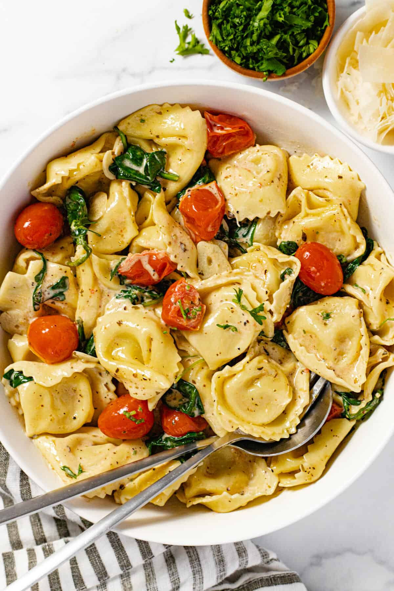

Tortellini

Ingredients
- 1 package tortellini
- 1 container cherry tomatoes
- 1 bag baby spinach
- 1 pound ground hot italian sausage
- 2 tablespoons garlic
- 2 tablespoons olive oil
Instructions
- Fill a medium sized sauce pan with a quart of water and bring to boil
- Add olive oil to medium skillet over medium to high height
- Once oil is hot, add in garlic and brown
- Add ground sausage to skillet and brown
- Water should be boiling, add tortellini to water while sausage browns
- Add spinach to skillet, cook down in batches if need be
- Add cherry tomatoes to skillet, lower heat to low and cook until tomatoes are sweating
- When tortellini are cooked, strain and add back to pot
- combine mixture from skillet to the pot with the tortellini and fold mixture in
- Serve with shredded parmesan on top